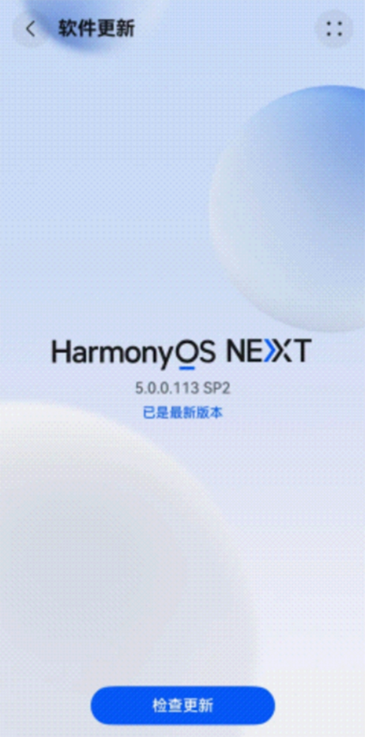
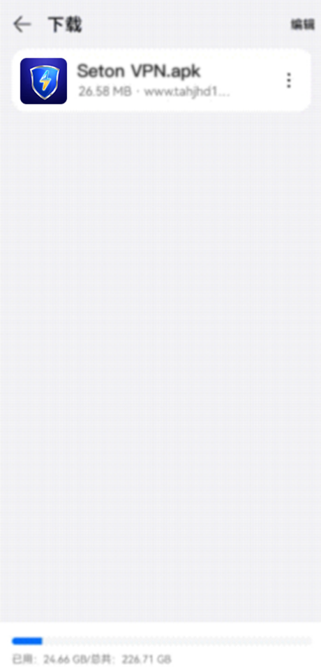

HarmonyOS NEXT 纯血鸿蒙如何下载赛盾VPN
随着 HarmonyOS NEXT 纯血鸿蒙系统推出，目前在鸿蒙系統 5.0.0.113 SP2 版本及以上的系统中已经可以使用赛盾VPN，具体操作步骤如下：
在纯血鸿蒙系统上安装快连 VPN:
· 下载「卓易通」- 打开「搜应用」-> 输入赛盾官网下载并安装;
PS:卓易通 App 是华为官网应用市场中，提供第三方应用资源安装的工具软件
具体步骤
第一步:下载【卓易通】并安装
1.将 HarmonyOS Next 系统升级到 5.0.0.113 SP2 版本及以上
2.打开华为应用市场，搜索“卓易通”下载安装

第二步:点击卓易通 App 找到「搜应用」浏览器，输入赛盾官网下载赛盾VPN
1.手机界面点击打开卓易通后内部会有「搜应用」(是一款内置浏览器);
2.打开搜应用，在网址列输入快连官网链接：{{webLink}}
3.在官网中下载”安卓版本”进行安装
第三步:在「卓易通」内下载赛盾安装包后直接安装使用:
1.打开下载安装包，并允许「搜应用」安装
2.若出现应用尚备案提示，点击：“了解风险”
3.勾选“已了解此应用风险”, 选择“仍然安装”
4.安装完成，即可到桌面卓易通内部中找到赛盾 VPN使用

常见问题:
Q1:无法找到卓易通 App?
确保 HarmonyOS Next 已更新至 5.0.0.113 SP2 版本及以上，并在华为应用市场中正确搜索。
Q2:打开「搜应用」下载后却不能安装?
若使用「搜应用」出现拦截安装的提示，可以在卓易通里面下载其他第三方浏览器，在第三方浏览器下载并安装，例如:火狐浏览器
Q3:赛盾 VPN 在鸿蒙原生浏览器中无法访问?
Next系统应用目前无法支持，在卓易通中下载其他第三方软件/浏览器访问，就可以正常运行
若您依然有使用问题，可以通过本文章右边客服按钮 or 发送邮件给 {{kfEmail}} 我们将有专人来负责处理您的问题。